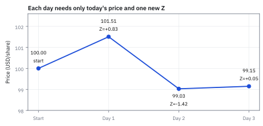
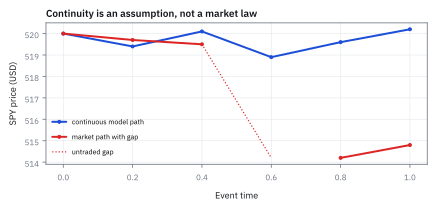
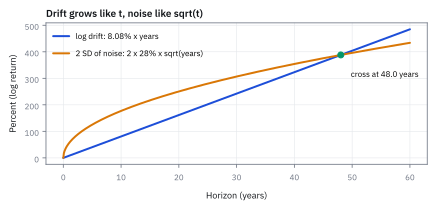

10.1 Definition of Geometric Brownian Motion (GBM)
ย้ายก้อนสุ่มของ Brownian motion ขึ้นไปไว้บนเลขชี้กำลัง ราคาจึงไม่มีวันติดลบ และทุกการขยับเป็นเปอร์เซ็นต์ของราคาวันนั้น
ทีมบริหารความเสี่ยงต้องจำลองหุ้นสมมติราคา \$100 ที่ขยับราว 28% ต่อปี คนหนึ่งเสนอให้ใช้ Brownian motion ตรง ๆ คือให้ราคาบวก shock เป็นดอลลาร์ โดย SD ของการขยับในหนึ่งปีเท่ากับ \$28 (28% ของ \$100) และไม่มี drift แล้วจำลองไปห้าปี ใน scenario ทั้งหมดจะมีกี่เปอร์เซ็นต์ที่ราคาหุ้นปลายปีที่ห้าติดลบ?
ลองตอบก่อนเปิดเฉลย
ราว 5.51% ราคาปลายปีที่ห้าเป็น Normal ที่ค่าเฉลี่ย \$100 และ SD $28\sqrt5\approx\$62.61$ ศูนย์อยู่ต่ำกว่าค่าเฉลี่ย 1.597 SD จึงได้ $\Phi(-1.597)\approx5.51\%$ ทั้งที่หุ้นติดลบไม่ได้ เพราะผู้ถือหุ้นเสียได้ไม่เกินเงินที่ลงไป และถ้าราคาร่วงเหลือ \$20 การขยับวันละ \$1.76 เท่าเดิมจะกลายเป็น 8.8% ต่อวัน แบบจำลองในหน้านี้แก้ทั้งสองข้อ: ราคาติดลบใน 0% ของ scenario และทุกการขยับเป็นสัดส่วนของราคาปัจจุบัน
ภาพรวมก่อนลงสูตร
Brownian motion $W_t$ มีสามสมบัติที่เราชอบ: การขยับในช่วงเวลาที่ไม่ทับกันเป็นอิสระ การขยับเป็น Normal ที่ variance เท่ากับความยาวช่วง และเส้นทางต่อเนื่อง (สามสมบัติของ Brownian motion) แต่ถ้าเอามันมาเป็นราคาตรง ๆ จะเจอสองปัญหา ราคาติดลบได้ และการขยับเป็นดอลลาร์คงที่ไม่ว่าราคาจะอยู่ที่ \$200 หรือ \$20
ทางแก้ใช้ของเดิมทั้งก้อน แค่ย้ายที่ เราให้ log ของราคา เดินแบบ Brownian motion แล้วแปลงกลับด้วย exponential ราคาจึงเป็น $S_0$ คูณ $e$ ยกกำลังอะไรสักอย่าง ซึ่งเป็นบวกเสมอ และการขยับของเลขชี้กำลังหนึ่งหน่วยคือการคูณราคาด้วยตัวเลขเดิมเสมอ ไม่ว่าราคาจะอยู่ระดับไหน แบบจำลองนี้ชื่อ Geometric Brownian Motion (GBM) และเป็นสมมติฐานของสูตร Black–Scholes
หน้านี้จะวัดว่าแบบบวกพังแค่ไหน เห็นว่าเมื่อไม่มีความผันผวน GBM คือดอกเบี้ยทบต้นต่อเนื่อง เขียนนิยาม สร้างสูตรเดินหน้าหนึ่งก้าว อธิบายว่าทำไมเลขชี้กำลังต้องมี $-\sigma^2/2$ เดินราคาสามวันด้วยมือ อ่านช่วงของราคาหนึ่งปี และปิดด้วยคำถามที่คนบนโต๊ะเทรดถามบ่อย: ต้องใช้ข้อมูลกี่ปีจึงจะเห็น drift ตลอดหน้าใช้หุ้นสมมติ \$100 ที่ $\mu=12\%$ ต่อปี และ $\sigma=28\%$
รูป — แบบบวกเทียบกับ GBM เมื่อใช้ตัวสุ่มชุดเดียวกัน
ศัพท์ที่ใช้ในหัวข้อนี้
- Geometric Brownian Motion (GBM)
- แบบจำลองราคาที่ log ของราคาเป็น Brownian motion ที่มี drift ราคาจึงเป็นบวกเสมอและขยับเป็นสัดส่วนของตัวเอง ใช้เป็นแบบจำลองตั้งต้นของราคาหุ้นในการจำลองและการตั้งราคา option
- Drift $\mu$
- อัตราเติบโตเฉลี่ยของราคาต่อปี ในความหมายว่าเปอร์เซ็นต์ที่ราคาขยับในก้าวสั้น ๆ มีค่าเฉลี่ย $\mu\Delta t$ บอกว่าราคา “โดยเฉลี่ย” ไปทางไหน แต่ไม่ใช่อัตราที่เส้นทางกลาง ๆ ได้จริง
- Log drift $\nu$
- อัตราต่อปีที่ log ของราคาเดินไปโดยเฉลี่ย เท่ากับ $\mu-\sigma^2/2$ และเป็นตัวคุม median ของราคา ตั้งชื่อแยกไว้เพื่อไม่ให้ 12% กับ 8.08% ถูกเรียกว่า “drift” เหมือนกัน
- Volatility $\sigma$
- SD ของ log return ในหนึ่งปี ช่วงยาว $\Delta t$ ปีมี SD $\sigma\sqrt{\Delta t}$ ใช้ปรับขนาด shock ให้เข้ากับความยาวก้าว
- Log return
- $\ln(S_{t+\Delta t}/S_t)$ ผลตอบแทนที่บวกกันข้ามช่วงเวลาได้ ต่างจาก simple return $S_{t+\Delta t}/S_t-1$ ที่ต้องคูณกัน ใช้เป็นตัวแปรหลักทุกครั้งที่ต้องคำนวณโอกาสของราคา
- Lognormal
- distribution ของตัวแปรบวกที่ log ของมันเป็น Normal ราคาของ GBM ณ เวลาหนึ่งเป็น lognormal ส่วน log ของราคาเป็น Normal
- Exact update
- สูตรเดินหน้าหนึ่งก้าวที่ให้ distribution ตรงกับแบบจำลองทุกความยาวก้าว ต้องการแค่ราคาล่าสุดกับเลขสุ่มหนึ่งตัว ต่างจาก Euler step ที่เป็นการประมาณ
สัญลักษณ์และหน่วย
| สัญลักษณ์ | ความหมาย | หน่วย |
|---|---|---|
| $S_t,\ S_0$ | ราคา ณ เวลา $t$ และราคาเริ่มต้น | ดอลลาร์ต่อหุ้น |
| $t,\ T,\ \Delta t$ | เวลา ระยะถือ และความยาวหนึ่งก้าว หนึ่งวันทำการคือ $1/252$ ปี | ปี |
| $\mu$ | drift ของราคา | ต่อปี |
| $\sigma$ | volatility | ต่อรากที่สองของปี |
| $\nu$ | log drift $\mu-\sigma^2/2$ | ต่อปี |
| $W_t$ | standard Brownian motion | รากที่สองของปี |
| $Z$ | standard Normal หนึ่งตัวต่อหนึ่งก้าว | ไม่มีหน่วย |
| $b$ | ความผันผวนเป็นดอลลาร์ของแบบจำลองแบบบวก | ดอลลาร์ต่อรากที่สองของปี |
ขั้นที่ 1 — วัดก่อนว่าแบบจำลองแบบบวกพังแค่ไหน
ก่อนสร้างของใหม่ต้องวัดให้ได้ว่าของเดิมพังตรงไหน แบบจำลองในคำถามเปิดเรื่องคือ $S_T=S_0+bW_T$ โดย $b=\$28$ ต่อรากที่สองของปี เพราะ standard Brownian motion ที่เวลา $T$ เป็น Normal ค่าเฉลี่ยศูนย์ variance $T$ ราคาปลายทางจึงเป็น Normal และถามโอกาสติดลบได้ตรง ๆ
บรรทัดที่สามหารด้วย $b\sqrt T$ เพื่อเปลี่ยน $W_T$ เป็น standard Normal ซึ่งทำได้เพราะ SD ของ $W_T$ คือ $\sqrt T$ ผล 5.51% ไม่ใช่โชคร้ายของการสุ่ม แต่เป็นโครงสร้าง: Normal มีหางซ้ายยาวไม่สิ้นสุด ยิ่งถือนาน SD ยิ่งโต โอกาสติดลบยิ่งมาก
ปัญหาที่สองซ่อนอยู่ใน $b$ ซึ่งเป็นดอลลาร์คงที่ ตอนราคา \$100 การขยับวันละ $28/\sqrt{252}\approx\$1.76$ คือ 1.76% แต่ถ้าหุ้นร่วงเหลือ \$20 การขยับ \$1.76 เท่าเดิมกลายเป็น 8.8% ต่อวัน หุ้นไม่ได้เหวี่ยงแรงขึ้นห้าเท่าเพียงเพราะราคาลดลง
รูป — ราคาปีที่ห้าของแบบบวก: หางซ้ายเลยศูนย์ไป
ขั้นที่ 2 — ถ้าไม่มีความผันผวน: ดอกเบี้ยทบต้นต่อเนื่อง
ก่อนใส่ความสุ่ม ลองถามว่าราคาที่โต 12% ต่อปีอย่างแน่นอนควรหน้าตาอย่างไร ถ้าทบต้น $n$ ครั้งต่อปี แต่ละครั้งได้ $12\%/n$ เงิน \$1 จะกลายเป็น $(1+0.12/n)^n$ ในหนึ่งปี ยิ่งทบถี่ยิ่งได้มาก แต่เพิ่มขึ้นช้าลงเรื่อย ๆ จนชนเพดาน
ทบรายวันกับทบต่อเนื่องต่างกันเพียง 0.000022 ต่อดอลลาร์ ขีดจำกัดของการทบถี่ไม่สิ้นสุดคือ $e^{\mu t}$ ซึ่งเป็นคำตอบของสมการ “อัตราโตของราคาเป็นสัดส่วน $\mu$ ของราคา” ในสองบรรทัดสุดท้าย (แทน $S_0e^{\mu t}$ กลับเข้าไป อนุพันธ์คือ $\mu S_0e^{\mu t}$ ตรงกับ $\mu S$) นี่คือเหตุผลที่ฐาน $e$ โผล่มา: $\mu$ ในเลขชี้กำลังอ่านได้ตรง ๆ ว่าเป็นอัตราทบต้นต่อเนื่องต่อปี
GBM คือสมการเดียวกันที่เติมความสุ่มเข้าไปในเลขชี้กำลัง ถ้าเอา $\sigma$ เป็นศูนย์ในนิยามของขั้นถัดไป จะได้ $S_0e^{\mu t}$ คืนมาพอดี ความสุ่มทำให้แต่ละเส้นทางแกว่งรอบเส้นทบต้นนี้ โดยแกว่งเป็นสัดส่วนของราคาเหมือนที่ดอกเบี้ยคิดเป็นสัดส่วน
ขั้นที่ 3 — นิยาม: ให้ log ของราคาเป็น Brownian motion
ทางแก้คือไม่ให้ราคาเป็น Brownian motion แต่ให้ log ของราคา เป็น Brownian motion ที่มี drift บรรทัดแรกเป็นนิยามของ $X_t$ โดยตั้งชื่อ $\nu$ ให้ drift ของมันไว้ก่อน อีกสองขั้นข้างหน้า เรื่องความโค้งของ $e^Y$ จะบอกว่าทำไม $\nu$ ต้องเท่ากับ $\mu-\sigma^2/2$ ไม่ใช่ $\mu$
exponential รับ input ได้ทุกค่า ติดลบเท่าไรก็ได้ แต่ผลเป็นบวกเสมอ ราคาจึงเข้าใกล้ศูนย์ได้แต่ไม่แตะ และการขยับของ $X_t$ หนึ่งหน่วยคือการคูณราคาด้วยตัวเลขเดิมไม่ว่าราคาอยู่ระดับไหน ปัญหาทั้งสองข้อของแบบบวก (ราคาติดลบ และการขยับเป็นดอลลาร์คงที่) จึงหายไปพร้อมกัน
บรรทัดสุดท้ายคือสิ่งที่ต้องจำให้แม่น: ตัวที่เป็น Normal คือ log ของราคา ส่วนตัวราคาเป็น lognormal variance $\sigma^2t$ มาจาก $\operatorname{Var}(\sigma W_t)=\sigma^2t$ ทุกครั้งที่ต้องคำนวณโอกาส เราจะย้ายคำถามไปอยู่บนแกน log ก่อนเสมอ
รูป — ก้าวเท่ากันบนแกน log คือการคูณเท่ากันบนแกนราคา
ขั้นที่ 4 — สูตรเดินหน้าหนึ่งก้าวที่ตรงเป๊ะ
ในโปรแกรมจำลองเราไม่มี $W_t$ ทั้งเส้น มีแค่ราคาวันนี้กับเลขสุ่มตัวใหม่ จึงต้องเขียน $S_{t+\Delta t}$ จาก $S_t$ วิธีคือแยกเลขชี้กำลังที่เวลา $t+\Delta t$ เป็นส่วนที่เกิดแล้วกับส่วนที่ยังไม่เกิด
การแยกใช้แค่ $e^{a+b}=e^ae^b$ ก้อนแรกคือ $S_t$ พอดีจึงแทนได้ ก้อนที่เหลือขึ้นกับการขยับของ $W$ ที่ยังไม่เกิด ซึ่งอิสระจากอดีตและเป็น $\mathcal N(0,\Delta t)$ ตาม สามสมบัติของ Brownian motion จึงเขียนเป็น $\sqrt{\Delta t}\,Z$ ได้
สูตรนี้ตรงเป๊ะไม่ว่า $\Delta t$ ยาวแค่ไหน เดินรายวัน 252 ก้าวหรือกระโดดทีเดียวหนึ่งปีได้ distribution ปลายทางเดียวกัน เพราะผลรวมของ Normal อิสระยังเป็น Normal และแต่ละก้าวต้องการแค่ราคาล่าสุด ไม่ต้องเก็บประวัติ นี่คือสมบัติ Markov ที่ GBM รับมาจาก Brownian motion
ขั้นที่ 5 — ทำไมเลขชี้กำลังต้องใช้ μ − σ²/2
ถ้าอยากให้ราคาโต “เฉลี่ย” $\mu$ ต่อปี ทำไมไม่ใส่ $\mu$ ลงในเลขชี้กำลังตรง ๆ? ลองขึ้น 1% แล้วลง 1% ก่อน: $1.01\times0.99=0.9999$ ผลตอบแทนเฉลี่ยของสองวันเป็นศูนย์ แต่ $\ln1.01+\ln0.99\approx-0.0001$ คือ log เฉลี่ยวันละ $-0.00005=-(0.01)^2/2$ ค่าเฉลี่ยของ log ต่ำกว่าค่าเฉลี่ยของเปอร์เซ็นต์ราวครึ่งหนึ่งของกำลังสองของการขยับ ขั้นนี้ทำเรื่องเดียวกันกับ GBM หนึ่งก้าว
จังหวะที่คนสะดุดคือ $\mathbb E[Y^2]$: พจน์ไขว้หายเพราะ $\mathbb E[Z]=0$ แต่ส่วนสุ่มยกกำลังสองได้ $\sigma^2\Delta t$ ซึ่งมีขนาดเท่ากับ $\Delta t$ ไม่ใช่ $\Delta t^2$ มันจึงไม่หายไปเมื่อก้าวสั้นลง ต่างจากแคลคูลัสปกติที่พจน์กำลังสองเล็กจนตัดทิ้งได้ เรื่องนี้คือ quadratic variation: ผลรวมกำลังสองของการขยับของ $W$ เท่ากับเวลาที่ผ่านไป พจน์ที่ตัดทิ้งในบรรทัดท้ายเล็กระดับ $\Delta t^2$
ผลคือ ถ้าอยากให้เปอร์เซ็นต์ที่ราคาขยับมีค่าเฉลี่ย $\mu\Delta t$ ต่อก้าว เลขชี้กำลังต้องเฉลี่ยน้อยกว่านั้น $\tfrac12\sigma^2\Delta t$ พอดี เพราะ $e^Y$ โค้งหงาย ขาขึ้นได้มากกว่าขาลงเสีย นี่คือที่มาของ $\nu=\mu-\sigma^2/2$ ไม่ใช่ค่าปรับให้สูตรสวย
รูป — ความโค้งของ e^Y ดันค่าเฉลี่ยขึ้น
ตัวย่อ $dS_t=\mu S_t\,dt+\sigma S_t\,dW_t$ ที่จะเห็นทั่วไปคือประโยคเดียวกันในภาษา SDE: ในก้าวสั้น ๆ เปอร์เซ็นต์ที่ราคาขยับมีค่าเฉลี่ย $\mu\,dt$ และ SD $\sigma\sqrt{dt}$ ถ้าเอา $\sigma$ เป็นศูนย์จะเหลือสมการทบต้นต่อเนื่อง $dS/dt=\mu S$ ตอนสร้าง Itô's lemma เราจะพิสูจน์ว่าตัวย่อนี้กับนิยาม $S_t=S_0e^{\nu t+\sigma W_t}$ คือ process เดียวกัน และหน้า ราคาคาดหวังในอนาคต จะพิสูจน์ว่าราคาเฉลี่ยในทุกระยะเวลาเท่ากับ $S_0e^{\mu T}$ พอดี ไม่ใช่แค่โดยประมาณ
ขั้นที่ 6 — แปลงพารามิเตอร์รายปีเป็นตัวเลขรายวัน
โจทย์ให้อะไรมาบ้าง: $S_0=\$100$, $\mu=0.12$ และ $\sigma=0.28$ ต่อปี ก้าวละหนึ่งวันทำการ $\Delta t=1/252$ ปี ตัวเลข 252 คือจำนวนวันที่ตลาดหุ้นสหรัฐฯ เปิด: ปี 2024 มี 366 วัน เป็นเสาร์อาทิตย์ 104 วัน เหลือวันจันทร์ถึงศุกร์ 262 วัน ลบวันหยุดตลาด 10 วัน
คำตอบ: ตัวคูณรายวันคือ $e^{0.000320635+0.0176383Z}$ แถวที่ห้ายืนยันเรื่องความโค้งของ $e^Y$ ด้วยตัวเลข: log drift รายวันบวกครึ่งหนึ่งของ variance รายวันได้ $\mu/252$ พอดี ส่วนเสียงรบกวนรายวัน 1.764% ใหญ่กว่า log drift รายวัน 0.032% ราว 55 เท่า
ตรวจเองใน 10 วินาที: $\sqrt{252}\approx15.875$ และ $0.28/15.875\approx0.01764$ ถ้าเผลอหารด้วย 252 แทน $\sqrt{252}$ จะได้ 0.00111 ซึ่งเล็กไป 15.9 เท่า
ขั้นที่ 7 — เดินราคาสามวันด้วยมือ
โจทย์ให้อะไรมาบ้าง: เครื่องสุ่มให้ $Z=+0.83$, $-1.42$ และ $+0.05$ สำหรับสามวันแรก ใช้ตัวคูณรายวัน $e^{0.000320635+0.0176383Z}$ ที่เพิ่งได้ และเก็บทศนิยมเต็มระหว่างทาง
คำตอบ: ราคาปิดสามวันคือ \$101.51, \$99.03 และ \$99.15 ถ้าถือ 20,000 หุ้น กำไรวันแรกคือ $20{,}000\times1.5073\approx\$30{,}146$ ไม่ใช่ \$30,200 ที่ได้จากราคาปัดเป็น \$101.51 ความต่าง \$54 มาจากการปัดทศนิยมก่อนคูณจำนวนหุ้น
ตรวจเองใน 10 วินาที: เลขชี้กำลังบวกกันข้ามวันได้ $0.0149605-0.0247258+0.0012026=-0.0085627$ และ $100e^{-0.0085627}\approx99.147$ ตรงกับ $S_3$ นี่คือข้อดีของ log return: สามวันรวมเป็นก้าวเดียวได้
รูป — สามวันแรกทีละวัน

ขั้นที่ 8 — ราคาหนึ่งปีข้างหน้า: median และช่วง 5% ถึง 95%
เส้นทางเดียวบอกได้แค่เรื่องเดียว แต่การตัดสินใจต้องใช้ภาพของทุกเส้นทาง จากนิยามของ GBM log ของราคาหนึ่งปีเป็น Normal จึงหา quantile ของราคาได้ด้วยการหา quantile บนแกน log แล้วแปลงกลับ exponential เพิ่มขึ้นตลอดจึงไม่สลับลำดับ ค่า $z_p$ คือ quantile ของ standard Normal (ตารางเดียวกับใน Normal distribution)
median ใช้ $z_{0.5}=0$ จึงเป็น $100e^{\nu}$ ขึ้นเพียง 8.42% ไม่ใช่ 12% ครึ่งหนึ่งของเส้นทางจบต่ำกว่า \$108.42 ทั้งที่ drift ของราคาคือ 12%
ช่วง 90% ไม่สมมาตรรอบ median: ด้านล่างห่าง \$40.01 ด้านบนห่าง \$63.42 เพราะระยะเท่ากันบนแกน log คือสัดส่วนเท่ากัน $108.42/68.40=171.83/108.42=e^{0.460559}\approx1.585$ ส่วนราคาเฉลี่ยไม่ได้อยู่ที่ median หน้า ราคาคาดหวังในอนาคต จะพิสูจน์ว่ามันคือ $100e^{0.12}\approx112.75$
รูป — ราคาหลัง 252 วันทำการ: median กับค่าเฉลี่ยแยกกัน

ขั้นที่ 9 — ต้องใช้ข้อมูลกี่ปีจึงจะเห็น drift
ตัวเลขรายวันของหุ้นนี้บอกว่าเสียงรบกวนรายวันใหญ่กว่า log drift ราว 55 เท่า ถ้าอยากพิสูจน์จากข้อมูลย้อนหลังว่าหุ้นตัวนี้มี drift บวกจริง ต้องใช้ข้อมูลกี่ปี? ใช้ t-statistic ของค่าเฉลี่ยแบบเดียวกับ การทดสอบสมมติฐาน กับ log return รายวัน $Y_k$ จำนวน $N$ วันที่อิสระและมี distribution เดียวกัน
จังหวะที่ต้องสังเกตคือ $\Delta t$ หายไป t-statistic ขึ้นกับจำนวนปีของข้อมูล $T$ อย่างเดียว ใช้ข้อมูลรายวันหรือรายนาทีก็ต้องรอเวลาปฏิทินเท่ากัน เก็บข้อมูลถี่ขึ้นไม่ช่วยให้เห็น drift เร็วขึ้น
ผล 48 ปีเปลี่ยนวิธีทำงานบนโต๊ะ: $\sigma$ ประมาณได้จากข้อมูลไม่กี่เดือน เพราะวัดจากกำลังสองของการขยับซึ่งข้อมูลถี่ช่วยได้ (ผลรวมกำลังสองของการขยับเท่ากับเวลาที่ผ่านไป ตาม สมบัติแปลก ๆ ของเส้นทาง Brownian) แต่ $\mu$ แทบประมาณไม่ได้จากประวัติราคา ใครอ้างว่าเห็น drift จากกราฟสามปี ส่วนใหญ่กำลังเห็นเสียงรบกวน
รูป — drift โตตามเวลา เสียงรบกวนโตตามรากที่สองของเวลา

ความผิดที่รันผ่านแต่ให้ราคาผิด
ใส่ $\mu$ ลงในเลขชี้กำลังตรง ๆ: เขียน $S_{t+\Delta t}=S_te^{\mu\Delta t+\sigma\sqrt{\Delta t}Z}$ แล้วคิดว่า drift คือ 12% ผลคือ log drift กลายเป็น 12% แทน 8.08% ทุก quantile ของราคาหนึ่งปีสูงไป $e^{0.0392}-1\approx4.00\%$ median กลายเป็น \$112.75 แทน \$108.42 ไม่มี error ขึ้นเลย โปรแกรมแค่มองโลกดีเกินไปเงียบ ๆ
คูณเสียงรบกวนด้วย $\Delta t$ แทน $\sqrt{\Delta t}$: ได้ SD รายวัน $0.28/252\approx0.111\%$ แทน 1.764% เล็กไป $\sqrt{252}\approx15.9$ เท่า ความเสี่ยงรายวันหายเกือบหมดทั้งที่ราคาจำลองยังดูสมเหตุสมผล
ใช้ Euler step กับก้าวยาว: $S_{t+\Delta t}=S_t(1+\mu\Delta t+\sigma\sqrt{\Delta t}Z)$ ที่ก้าวเดียวหนึ่งปีให้ราคาเป็น Normal ค่าเฉลี่ย \$112 SD \$28 ติดลบเมื่อ $Z\lt-1.12/0.28=-4$ คือโอกาส $\Phi(-4)\approx0.0032\%$ และไม่มีหางขวายาว สูตรเดินหน้าแบบ exact ใช้ต้นทุนเท่ากัน จึงไม่มีเหตุผลใช้ Euler กับ GBM (หน้า การจำลอง SDE เทียบสองวิธีกับ SDE ที่ไม่มีสูตรปิด)
เฉลี่ย log return รายวันคูณ 252 แล้วเรียกว่า $\mu$: ตัวที่ได้คือ $\nu$ ถ้าต้องการ $\mu$ ต้องบวก $\sigma^2/2$ กลับ กับหุ้นตัวอย่างต่างกัน 3.92 จุดต่อปี ในทางกลับกัน ถ้าเอกสารบอกว่า “log drift 12%” แปลว่า $\nu=0.12$ และ $\mu=0.1592$ ทุกครั้งที่รับพารามิเตอร์มาต้องถามว่าเป็น $\mu$ หรือ $\nu$
ใช้ทำอะไรบนโต๊ะจริง
สูตรเดินหน้าหนึ่งก้าว $S_{t+\Delta t}=S_te^{\nu\Delta t+\sigma\sqrt{\Delta t}Z}$ คือบรรทัดที่อยู่ในทุกระบบจำลองราคาหุ้น: VaR แบบ Monte Carlo ของพอร์ตที่มี option สร้างราคาวันพรุ่งนี้ของทุกหุ้นด้วยสูตรนี้ โดยป้อน $Z$ ที่ผสมกันด้วย Cholesky ให้หุ้นขยับร่วมกันถูกต้อง แล้วตีราคาพอร์ตใหม่ทีละเส้นทาง
สูตร Black–Scholes ใช้ GBM ตัวเดียวกันแต่เปลี่ยน $\mu$ เป็นอัตราดอกเบี้ย (เหตุผลอยู่ที่ risk-neutral measure) ส่วนงานวางแผนกับลูกค้าใช้ median และช่วง 5% ถึง 95% ของราคาหนึ่งปี (\$108.42 กับ \$68.40 ถึง \$171.83) แทนการบอก “ผลตอบแทนคาดหวัง” ตัวเดียว เพราะตัวเลขเดียวซ่อนทั้งหางซ้ายและความจริงที่ว่าครึ่งหนึ่งของเส้นทางจบต่ำกว่า median
โจทย์ตรวจความเข้าใจ
1. หุ้นสมมติราคา \$50 มี $\mu=8\%$ และ $\sigma=40\%$ ต่อปี จำลองรายสัปดาห์ $\Delta t=1/52$ จงหา log drift ต่อสัปดาห์ SD ต่อสัปดาห์ และราคาหลังหนึ่งสัปดาห์เมื่อ $Z=-1$
เฉลย
$\nu=0.08-0.16/2=0$ พอดี log drift ต่อสัปดาห์จึงเป็นศูนย์ SD ต่อสัปดาห์ $0.40/\sqrt{52}\approx0.05547$ ราคาคือ $50e^{-0.05547}\approx\$47.30$ หุ้นตัวนี้ราคาเฉลี่ยโต 8% ต่อปี แต่ median ไม่โตเลย ความผันผวนกิน drift ของ log ไปหมด
2. หุ้นในหน้านี้ ($\mu=12\%$, $\sigma=28\%$, เริ่ม \$100) หลังสองปีมี median และช่วง 5% ถึง 95% เท่าไร?
เฉลย
$\ln(S_2/100)\sim\mathcal N(0.1616,\ 0.28^2\times2)$ SD คือ $0.28\sqrt2\approx0.39598$ median $100e^{0.1616}\approx\$117.54$ ขอบล่าง $100e^{0.1616-1.644854(0.39598)}=100e^{-0.48973}\approx\$61.28$ ขอบบน $100e^{0.1616+0.65133}=100e^{0.81293}\approx\$225.45$ ช่วงกว้างขึ้นตาม $\sqrt2$ บนแกน log ไม่ใช่สองเท่า
3. ถ้า $\sigma$ ลดเหลือ 16% โดย $\mu$ ยัง 12% ต้องใช้ข้อมูลกี่ปีจึงได้ t-statistic เท่ากับ 2?
เฉลย
$\nu=0.12-0.0128=0.1072$ และ $T=(2\times0.16/0.1072)^2=(2.98507)^2\approx8.91$ ปี ความผันผวนลดลงเกือบครึ่งทำให้เวลาที่ต้องรอลดจาก 48 ปีเหลือไม่ถึง 9 ปี เพราะ $\sigma$ อยู่ในตัวเศษและ $\nu$ ในตัวส่วนโตขึ้นด้วย
คำนวณซ้ำด้วย JavaScript
รันใน Node.js ได้โดยไม่ติดตั้งแพ็กเกจ โค้ดคำนวณตัวเลขทุกขั้นของหน้านี้ ใช้ Normal CDF ที่เขียนเอง และพิมพ์ผลเป็น JSON
เปิดดูโค้ด
function positive(x, name) {
if (typeof x !== 'number' || !Number.isFinite(x) || x <= 0) throw new RangeError(name + ' must be a positive number');
return x;
}
// Standard Normal CDF: Taylor series near the centre, continued fraction in the tails.
function normCdf(x) {
const ax = Math.abs(x), density = Math.exp(-ax * ax / 2) / Math.sqrt(2 * Math.PI);
if (ax < 3) {
let term = ax, sum = ax;
for (let k = 1; term > 1e-17 * sum; k++) { term *= ax * ax / (2 * k + 1); sum += term; }
return x < 0 ? 0.5 - density * sum : 0.5 + density * sum;
}
let f = 0;
for (let k = 300; k >= 1; k--) f = k / (ax + f);
const tail = density / (ax + f);
return x < 0 ? tail : 1 - tail;
}
function normInv(p) {
let lo = -40, hi = 40;
for (let i = 0; i < 200; i++) { const mid = (lo + hi) / 2; if (normCdf(mid) < p) lo = mid; else hi = mid; }
return (lo + hi) / 2;
}
// One exact GBM step of length dt years: log drift nu*dt and noise sigma*sqrt(dt).
function gbmStep(mu, sigma, dt) {
positive(sigma, 'Volatility'); positive(dt, 'Time step');
const nu = mu - sigma * sigma / 2;
return {nu, drift: nu * dt, halfVariance: sigma * sigma / 2 * dt, diffusion: sigma * Math.sqrt(dt)};
}
function gbmPath(S0, mu, sigma, dt, shocks) {
const {drift, diffusion} = gbmStep(mu, sigma, dt), prices = [];
let S = positive(S0, 'Start price');
for (const z of shocks) { S *= Math.exp(drift + diffusion * z); prices.push(S); }
return prices;
}
// Price quantile at horizon T: log price is Normal, and exp keeps the order of quantiles.
function priceQuantile(S0, mu, sigma, T, p) {
const {nu} = gbmStep(mu, sigma, 1);
return S0 * Math.exp(nu * T + normInv(p) * sigma * Math.sqrt(T));
}
// Years of data before the mean daily log return reaches the chosen t-statistic.
function yearsToSeeDrift(mu, sigma, tStat = 2) {
const {nu} = gbmStep(mu, sigma, 1);
if (Math.abs(nu) < 1e-12) throw new RangeError('Log drift is zero: no amount of data makes it visible');
return (tStat * sigma / nu) ** 2;
}
const S0 = 100, mu = 0.12, sigma = 0.28, day = 1 / 252;
const step = gbmStep(mu, sigma, day);
const path = gbmPath(S0, mu, sigma, day, [0.83, -1.42, 0.05]);
console.log(JSON.stringify({
arithmeticBelowZero5y: normCdf(-100 / (28 * Math.sqrt(5))),
compounding: [1, 12, 365].map(n => (1 + mu / n) ** n).concat(Math.exp(mu)),
step, dailyMeanReturn: step.drift + step.halfVariance, muPerDay: mu * day,
convexity: (Math.exp(0.28) + Math.exp(-0.28)) / 2,
path, pnlDay1: 20000 * (path[0] - S0),
oneYear: [0.05, 0.5, 0.95].map(p => priceQuantile(S0, mu, sigma, 1, p)),
yearsToSeeDrift: yearsToSeeDrift(mu, sigma),
exercises: {
weekly: gbmPath(50, 0.08, 0.40, 1 / 52, [-1])[0],
twoYears: [0.05, 0.5, 0.95].map(p => priceQuantile(S0, mu, sigma, 2, p)),
lowVol: yearsToSeeDrift(0.12, 0.16)
}
}));สิ่งที่ควรตอบได้หลังอ่าน
- GBM นิยามว่า $S_t=S_0e^{(\mu-\sigma^2/2)t+\sigma W_t}$ log ของราคาเป็น Normal ราคาเป็น lognormal และบวกเสมอ ถ้า $\sigma=0$ จะเหลือดอกเบี้ยทบต้นต่อเนื่อง $S_0e^{\mu t}$
- สูตร $S_{t+\Delta t}=S_te^{\nu\Delta t+\sigma\sqrt{\Delta t}Z}$ ตรงเป๊ะทุกความยาวก้าว และต้องการแค่ราคาล่าสุด
- $\mu$ คืออัตราเฉลี่ยของเปอร์เซ็นต์ที่ราคาขยับ ส่วนเลขชี้กำลังใช้ $\nu=\mu-\sigma^2/2$ เพราะ $e^Y$ โค้งหงาย: 12% กับ 28% ให้ 8.08%
- หุ้น \$100 นี้หลังหนึ่งปีมี median \$108.42 และช่วง 5% ถึง 95% จาก \$68.40 ถึง \$171.83 ซึ่งไม่สมมาตร
- การเห็น drift ที่ t เท่ากับ 2 ต้องใช้ข้อมูล $(2\sigma/\nu)^2$ ปี คือราว 48 ปีในตัวอย่างนี้ เก็บข้อมูลถี่ขึ้นไม่ช่วย
หน้าถัดไป ราคาคาดหวังในอนาคต: ทำไม drift คือ μ พอดี จะใช้ moment generating function ของ Normal พิสูจน์ว่าราคาเฉลี่ยโตที่ $\mu$ พอดี และวัดว่าช่องว่างระหว่างค่าเฉลี่ยกับ median กว้างแค่ไหนเมื่อถือนาน